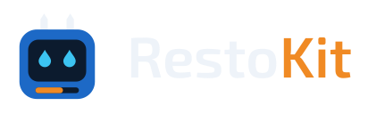

A restoration kit for water, mold, and crawlspace work, from tech to lead, PM, and estimator.
Runs on: commercial models only, loaded into the Grok app or a Grok Bot.
What it is
RestoKit is a structured JSON kit for anyone running a restoration job. It's grounded in IICRC S500 (water) and S520 (mold) principles and written the way a senior tech talks a job through. It doesn't replace years on the job. Its main job is memory: holding the rare edge cases that don't come up often enough to stay top of mind.
Who it's for
- Tech: the job flow in order, with safety checks called out when they matter: category, electrical, crawlspace gas.
- Lead: containment, negative air, equipment sizing, and crew and labor calls.
- PM: hold status, work authorization, daily drying readings, and verification before teardown.
- Estimator: remove-vs-dry and category calls, plus documentation that backs up the scope.
How it works
- Load it. Attach
resto_kit_0.8.9.jsonin the Grok app or add it to a Grok Bot's knowledge. Nothing to install. - Tell it the job. For example: "Category 2 supply-line leak, kitchen and crawlspace, 1990s house, I'm the PM."
- Ask one thing at a time. "Remove or dry this LVP?" "Is the subfloor dry?"
- Get a field-ready answer. Short and specific, grounded in IICRC S500 and S520 principles. Deeper detail only when you ask.
What's inside
- Five gated phases, from Hold Status to Closeout, so safety steps don't get skipped.
- Modules for category, remove vs. dry, containment, negative air, equipment sizing, mold, and crawlspaces.
- Base science: RH, temperature, GPP, vapor drive, wicking, material behavior, dry standards.
- Field lessons from daily job logs, added only once they prove out on real jobs.
Status
- Kit version: 0.8.9.
- The full kit is private. It's developed in a private repo; the public repo shows what it covers and how it's laid out.
- Next: connecting the field scope to Xactimate so the scope and the estimate line up.
- For shops: demo on request. I can build a company version around a shop's own procedures.
Links
- Public repo: github.com/neuresthetics/resto_kit_public
- Request a demo: neuresthetics@gmail.com
- GitHub: github.com/neuresthetics